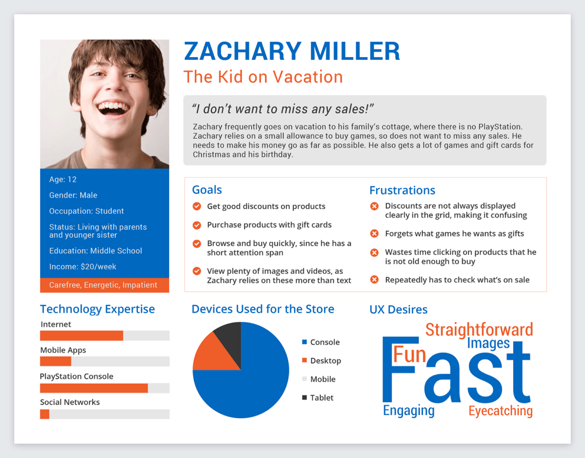
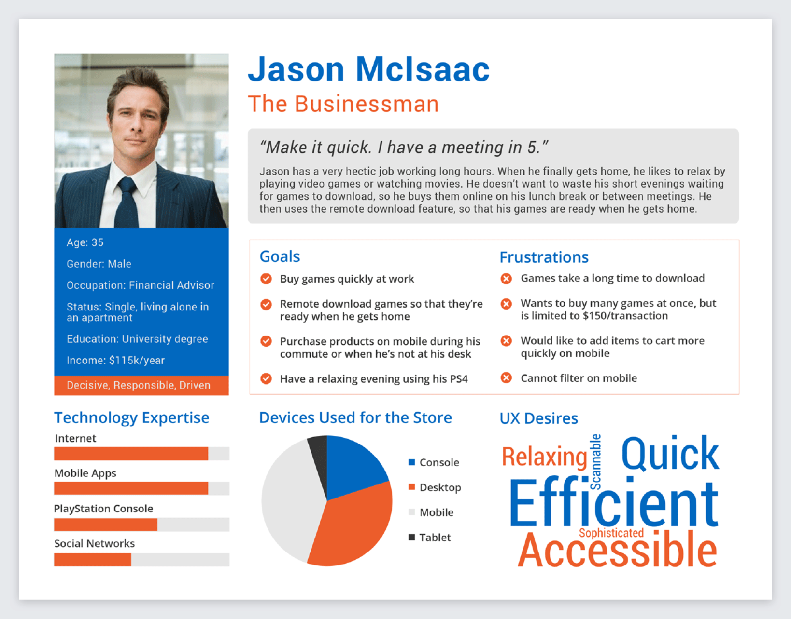
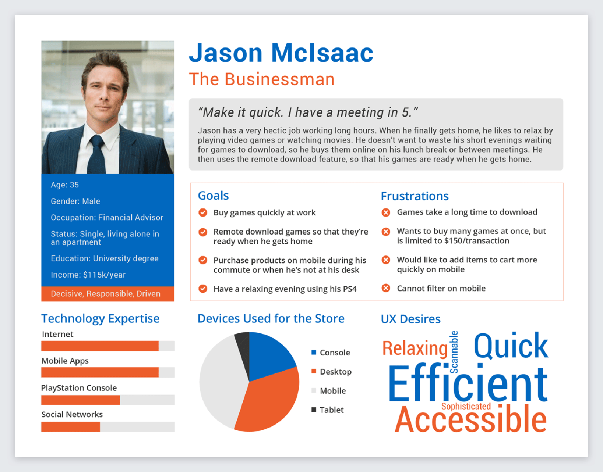

PlayStation Network
PlayStation Store Personas
One of my tasks at PlayStation Network was to create personas for the PlayStation web store. I researched why people use the webstore, rather than the console version, through interviewing users and reading online forums. I found that the 3 primary reasons were so people could buy items at work and remote download purchases to the console, so they wouldn't miss deals while away from the console, and because the PlayStation controllers are inconvenient for navigation. From this information, I developed the following personas. Each persona corresponds to one of the primary use cases. The color scheme of the personas is that of the PlayStation website.
 
